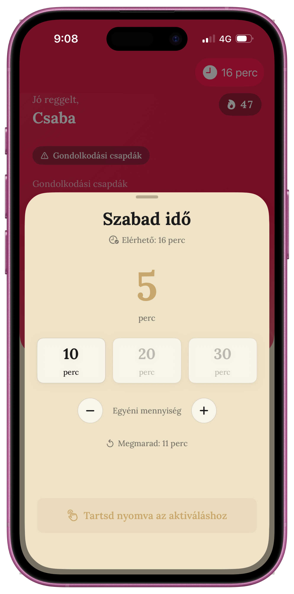
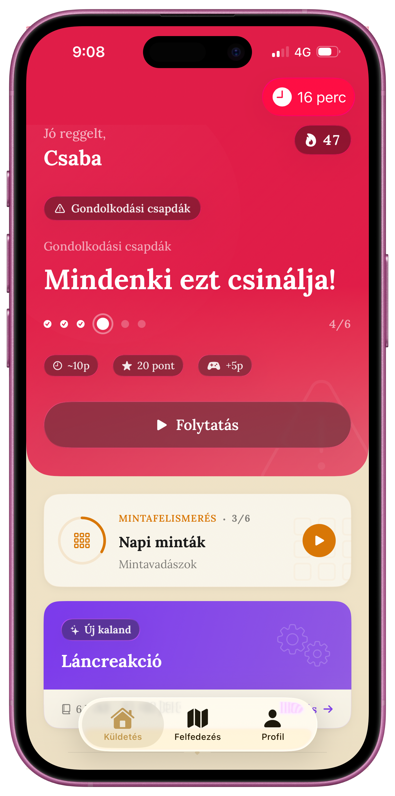
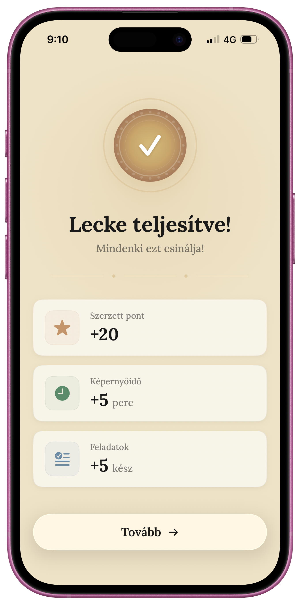

LogicLab Kids
Képernyőidő, ami gondolkodtat
Hogyan fordítható meg az AI okozta kognitív leépülés, ha a képernyőidőt jutalomként alkalmazzuk?[1]



Az MIT kutatói kimutatták: az AI-t használó diákok 55%-kal kevesebb agyi aktivitást mutatnak.[1] A 7–14 éves korosztálynál a gondolkodás alapjai most épülnek — ha nem edzik, később nehezen pótolható.
A „fake door" teszt konverziós arányai messze meghaladták az iparági átlagot.[3] A 11.1%-os feliratkozási arány bizonyítja a fizetőképes keresletet a jutalomalapú modellre.
- Kvantitatív: Landing page, GA4 mérés[3]
- Kvalitatív: Mélyinterjúk szülőkkel, tanárokkal, diákokkal[4]
- Változó: Jutalomalapú képernyőidő[2] vs. hagyományos tiltás
A szülők eddig csak a képernyőmegvonásra hagyatkozhattak, ami családi konfliktusokhoz vezetett. A gamifikáció és jutalomalapú modell sikeresebben ösztönzi a kritikus gondolkodást.
Korlátok: A teszt szándékot mér, nem valós használatot. Nagyobb mintán validálandó.[4]
„Tanárként látom, hogy drasztikusan esett a gyerekek problémamegoldó képessége. Ha valami nem megy elsőre, azonnal a ChatGPT-hez nyúlnak."
Bence, általános iskolai tanár„Nálunk minden este harc megy a képernyőidő miatt. Valami olyan kellene, ami belső motivációt ad nekik."
Dénes, 3 gyermek édesapjaOldallátogató
2 nap alatt
Érdeklődő
47.8% konverzió
Feliratkozó
11.1% konverzió
Nem büntetünk. Motiválunk.
A jövő generációja mindenképp AI-t fog használni. A kérdés: ők irányítják az algoritmusokat, vagy azok őket.
[1] Kosmyna, N. et al. (2025). Your Brain on ChatGPT: Accumulation of Cognitive Debt. MIT Media Lab. arXiv:2506.08872
[2] Apple Inc. Screen Time API & Family Controls Framework. developer.apple.com/documentation/familycontrols
[3] Google Analytics GA4 adatok. LogicLab Kids validációs landing page. Saját mérés, 2026.
[4] Saját kvalitatív kutatás: Mélyinterjúk tanárokkal, szülőkkel és 7–14 éves diákokkal (n=12), 2026.